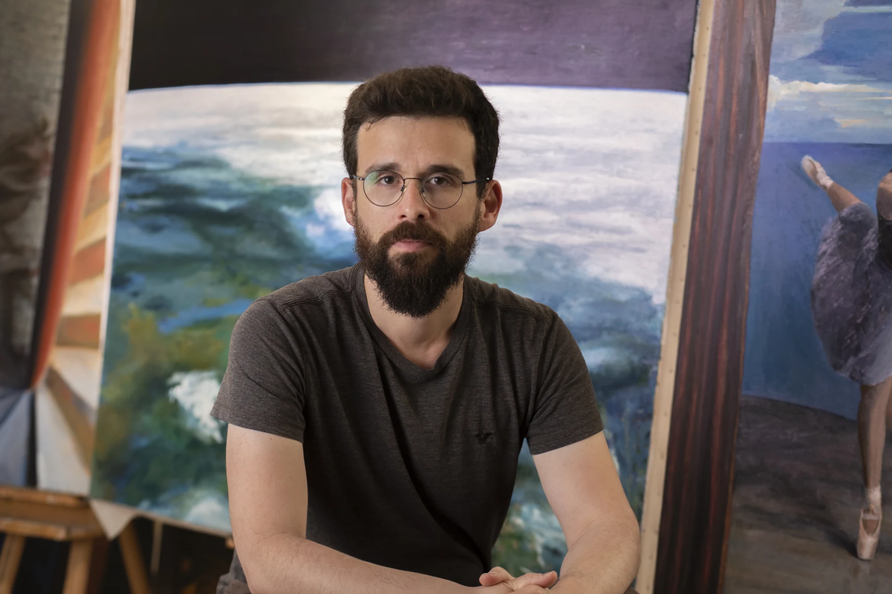

Painting is an act of observation, movement, and material. Through the intensity of sustained looking — which evolves over time — the painter forms a deep connection with the painted object, and with life itself.
The magic of painting happens where the sensation of something alive meets the sensation of abstraction — the kind that only paint application can create. There is no parallel to the joy of taking dirt mixed with linseed oil, or any other medium, and manipulating it into something that feels truly alive.
That manipulation of material arises from movement — the visible trace of all inner and outer states. It is through this gesture, this physical negotiation with matter, that sensation becomes form.
If life exists somewhere between order and chaos, then a lifelike image in painting must emerge from both of these opposing forces. Painting is made of opposites — it cannot move in one direction only. If you darken, you must also lighten. If you define, you must obscure. If you create motion, you must also create stillness. To stay present within all of these contradictions demands inner discipline and the willingness to push beyond one's natural tendencies — to explore, stretch, and continually research the endless range of possibilities. To hold on, and to let go.
These opposing extremes — the tension between them — form the foundation of my process. They appear not only in execution, but also in the deeper questions around subject and meaning — whether to paint the beautiful, as a meditative gesture in search of quiet, or the ugly and despairing, as a psychoanalytic gesture of self-healing and connection with others.
Or perhaps, once again, to find that delicate space where these opposites meet — the very space of life itself.
- 2024 Wind Words — Litvak Contemporary, group exhibition, Curator: Hadas Glazer
- 2023 Figurativas — MEAM, European Museum of Modern Art
- 2022 HalasArt — 187 Contemporary Art Gallery, group exhibition
- 2022 Autumn Salon — Keren Bar-Gil, group exhibition
- 2021 Plaster 7 — 187 Contemporary Art Gallery, group exhibition
- 2021 Tel Aviv Museum — Rappaport Collection, group exhibition
- 2021 Rothschild Fine Art Gallery — group exhibition
- 2021 Bat Yam Art Institute Gallery — group exhibition, Curator: Shay Pardo
- 2020 AIR Gallery — Virtual group exhibition, Manchester, England
- 2019 Danalogue — group exhibition, Shechter Institute, Tel Aviv
- 2019 Ayelet Boker Gallery — group exhibition, Curator: Ella Rozenberg
- 2019 Fresh Paint Art Fair — independent artists incubator
- 2016–2018 Hatahana — Studies at the studio school of figurative painting, under David Nipo and Aram Gershuni